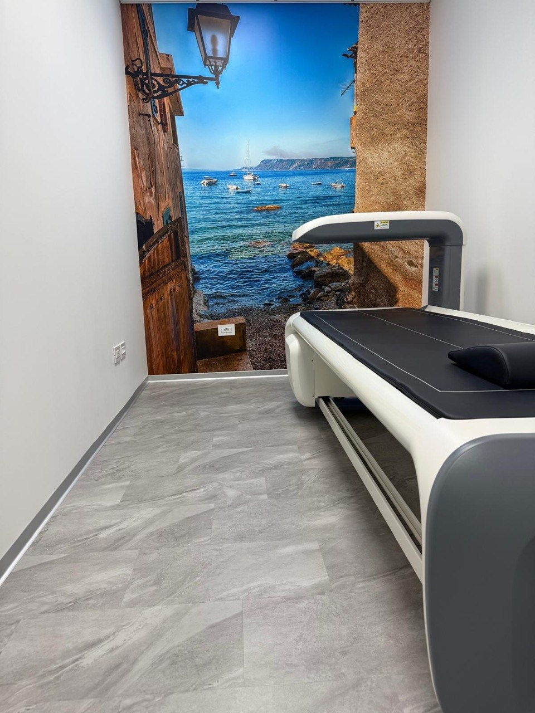

L'esame di riferimento per la diagnosi e il monitoraggio dell'osteoporosi.
La MOC (Mineralometria Ossea Computerizzata), conosciuta anche come DEXA (Dual Energy X-ray Absorptiometry), è un esame diagnostico non invasivo che misura con precisione la densità minerale ossea, ossia la quantità di calcio e di altri minerali presenti nelle ossa.
L'apparecchiatura emette due fasci di raggi X a bassa energia che attraversano le ossa. In base all'energia assorbita, viene calcolata la densità ossea, espressa come T-score e Z-score. L'esame viene eseguito principalmente a livello della colonna lombare e dell'anca (femore prossimale), le sedi più soggette a fratture da fragilità.
L'esame è rapido (10–20 minuti), completamente indolore e utilizza una dose di radiazioni molto bassa, paragonabile a quella di un volo intercontinentale.

La MOC è indicata in diverse categorie di pazienti. Il tuo medico curante ti indicherà se e quando eseguirla.
Per la valutazione del rischio osteoporotico e il monitoraggio della densità ossea.
L'osteoporosi maschile è spesso sottovalutata. La MOC permette una diagnosi precoce e tempestiva.
L'assunzione protratta di corticosteroidi aumenta il rischio di riduzione della massa ossea.
Storia familiare di osteoporosi, fratture da fragilità, malassorbimento intestinale, ipertiroidismo.
Verifica periodica dell'efficacia del trattamento farmacologico per l'osteoporosi già diagnosticata.
Analisi della composizione corporea: massa grassa, massa magra e contenuto minerale osseo totale.
Il referto MOC include il T-score, che confronta la tua densità ossea con quella di un adulto giovane sano.
Referto disponibile in giornata. Contattaci per fissare il tuo appuntamento.
Prenota Ora